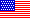

FISTS - The International Morse Preservation Society (Den internationella sammanslutningen för morse-telegrafins bevarande)
Motto: Where Fists Make Friends. (Där FISTS (= knytnävar) blir vänner)
Detta är en världsomspännande telegrafiklubb som grundades i Storbrittanien. Den är öppen för alla telegrafientusiaster och har ett urval av aktiviteter som innefattar diplom, tester och en skriftlig bulletin som heter Key Notes (nyckelanteckningar eller viktiga anteckningar).
 Klicka här
för att se den brittiska grenens website.
Klicka här
för att se den brittiska grenens website.
 Klicka här
för att se den amerikanska grenens website.